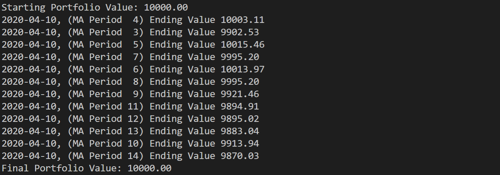

backtrader resample過程
如何將一個小週期的data 轉換成一個大週期的data？具體如何操作，這個在BT裡面使用resample 完成的。例如days轉換成weeks?
data = btfeeds.BacktraderCSVData(dataname=datapath)
cerebro.adddata(data) # First add the original data - smaller timeframe
cerebro.resampledata(data, timeframe=tframes[args.timeframe],
compression=args.compression)
會自動在datas裡面新增這2個data，第二個data在第一個data的基礎上，進行資料的resample.
這裡需要注意：
timeframe：壓縮的週期，只能比被壓縮的資料週期大，當前資料週期是days,那麼timeframe可以是weeks,M，year等。
compression：一個timeframe壓縮成多少個bar，一般是1。當前是5個days bar壓縮成一個week bar.
資料壓縮的過程：
當前的data無法進行一次性的preload，linebuffer 每次向前移動一個單位長度，即每次讀取data的一個資料，然後每次checkover一下是否集齊5根bar：
def _checkbarover(self, data, fromcheck=False, forcedata=None):
chkdata = DTFaker(data, forcedata) if fromcheck else data
isover = False
if not self.componly and not self._barover(chkdata):
return isover
if self.subdays and self.p.bar2edge:
isover = True
elif not fromcheck: # fromcheck doesn't increase compcount
self.compcount += 1
if not (self.compcount % self.p.compression):
# boundary crossed and enough bars for compression ... proceed
isover = True
return isover
當完成一個週期的壓縮後，isover是true。
資料的壓縮演算法_bar 裡面的：
def bupdate(self, data, reopen=False):
'''Updates a bar with the values from data
Returns True if the update was the 1st on a bar (just opened)
Returns False otherwise
'''
if reopen:
self.bstart()
self.datetime = data.datetime[0]
self.high = max(self.high, data.high[0])
self.low = min(self.low, data.low[0])
self.close = data.close[0]
self.volume += data.volume[0]
self.openinterest = data.openinterest[0]
o = self.open
if reopen or not o == o:
self.open = data.open[0]
return True # just opened the bar
return False
壓縮完成的資料存放在：
for i, dti in enumerate(dts):
if dti is not None:
di = datas[i]
rpi = False and di.replaying # to check behavior
if dti > dt0:
if not rpi: # must see all ticks ...
di.rewind() # cannot deliver yet
# self._plotfillers[i].append(slen)
elif not di.replaying:
# Replay forces tick fill, else force here
di._tick_fill(force=True)
di._tick_fill：完成對一個bar的填充。
量化交易回測框架Backtrader使用optstrategy最佳化
給策略增加指標後，需要給你指標設定參數，比如SMA設定幾天合適呢，每個股票的週期又都不一樣。總不能一個一個的自己嘗試。Backtrader提供了一個參數最佳化的方法，可以按照給出的範圍來運行，大家可以根據結果尋找最優的均線天數。具體可以參看Backtrader官方文件quickstart
- 通過給策略一個範圍值，根據運行結果，找出某適合一隻股票的盤整週期。
通過optstrategy方法，給策略設定範圍值，讓策略逐個執行，對比結果。
"""
Created on Sun Mar 29 12:18:17 2020
@author: horace pei
"""
#############################################################
# import
#############################################################
from __future__ import absolute_import, division, print_function, unicode_literals
import os, sys
import pandas as pd
import backtrader as bt
#############################################################
# global const values
#############################################################
#############################################################
# static function
#############################################################
#############################################################
# class
#############################################################
# Create a Stratey
class TestStrategy(bt.Strategy):
# 自訂均線的實踐間隔，默認是5天
params = (
("maperiod", 5),
("printlog", False),
)
def log(self, txt, dt=None, doprint=False):
""" Logging function for this strategy"""
if self.params.printlog or doprint:
dt = dt or self.datas[0].datetime.date(0)
print("%s, %s" % (dt.isoformat(), txt))
def __init__(self):
# Keep a reference to the "close" line in the data[0] dataseries
self.dataclose = self.datas[0].close
# To keep track of pending orders
self.order = None
# buy price
self.buyprice = None
# buy commission
self.buycomm = None
# 增加均線，簡單移動平均線（SMA）又稱“算術移動平均線”，是指對特定期間的收盤價進行簡單平均化
self.sma = bt.indicators.SimpleMovingAverage(
self.datas[0], period=self.params.maperiod
)
# 訂單狀態改變回呼方法 be notified through notify_order(order) of any status change in an order
def notify_order(self, order):
if order.status in [order.Submitted, order.Accepted]:
# Buy/Sell order submitted/accepted to/by broker - Nothing to do
return
# Check if an order has been completed
# Attention: broker could reject order if not enough cash
if order.status in [order.Completed]:
if order.isbuy():
self.log(
"BUY EXECUTED, Price: %.2f, Cost: %.2f, Comm %.2f"
% (order.executed.price, order.executed.value, order.executed.comm)
)
self.buyprice = order.executed.price
self.buycomm = order.executed.comm
elif order.issell():
self.log(
"SELL EXECUTED, Price: %.2f, Cost: %.2f, Comm %.2f"
% (order.executed.price, order.executed.value, order.executed.comm)
)
self.bar_executed = len(self)
elif order.status in [order.Canceled, order.Margin, order.Rejected]:
self.log("Order Canceled/Margin/Rejected")
# Write down: no pending order
self.order = None
# 交易狀態改變回呼方法 be notified through notify_trade(trade) of any opening/updating/closing trade
def notify_trade(self, trade):
if not trade.isclosed:
return
# 每筆交易收益 毛利和淨利
self.log("OPERATION PROFIT, GROSS %.2f, NET %.2f" % (trade.pnl, trade.pnlcomm))
def next(self):
# Simply log the closing price of the series from the reference
self.log("Close, %.2f" % self.dataclose[0])
# Check if an order is pending ... if yes, we cannot send a 2nd one
if self.order:
return
# Check if we are in the market(當前帳戶持股情況，size，price等等)
if not self.position:
# Not yet ... we MIGHT BUY if ...
if self.dataclose[0] >= self.sma[0]:
# 當收盤價，大於等於均線的價格
# BUY, BUY, BUY!!! (with all possible default parameters)
self.log("BUY CREATE, %.2f" % self.dataclose[0])
# Keep track of the created order to avoid a 2nd order
self.order = self.buy()
else:
# Already in the market ... we might sell
if self.dataclose[0] < self.sma[0]:
# 當收盤價，小於均線價格
# SELL, SELL, SELL!!! (with all possible default parameters)
self.log("SELL CREATE, %.2f" % self.dataclose[0])
# Keep track of the created order to avoid a 2nd order
self.order = self.sell()
def stop(self):
self.log(
"(MA Period %2d) Ending Value %.2f"
% (self.params.maperiod, self.broker.getvalue()),
doprint=True,
)
#############################################################
# global values
#############################################################
#############################################################
# global function
#############################################################
def get_dataframe():
# Get a pandas dataframe
datapath = "./data/stockinfo.csv"
tmpdatapath = "./data/stockinfo_tmp.csv"
print("-----------------------read csv---------------------------")
dataframe = pd.read_csv(
datapath, skiprows=0, header=0, parse_dates=True, index_col=0
)
dataframe.trade_date = pd.to_datetime(dataframe.trade_date, format="%Y%m%d")
dataframe["openinterest"] = "0"
feedsdf = dataframe[
["trade_date", "open", "high", "low", "close", "vol", "openinterest"]
]
feedsdf.columns = [
"datetime",
"open",
"high",
"low",
"close",
"volume",
"openinterest",
]
feedsdf.set_index(keys="datetime", inplace=True)
feedsdf.iloc[::-1].to_csv(tmpdatapath)
feedsdf = pd.read_csv(
tmpdatapath, skiprows=0, header=0, parse_dates=True, index_col=0
)
if os.path.isfile(tmpdatapath):
os.remove(tmpdatapath)
print(tmpdatapath + " removed!")
return feedsdf
########################################################################
# main
########################################################################
if __name__ == "__main__":
# Create a cerebro entity(建立cerebro)
cerebro = bt.Cerebro()
# Add a strategy(加入自訂策略,可以設定自訂參數，方便調節)
cerebro.optstrategy(TestStrategy, maperiod=range(3, 15))
# Get a pandas dataframe(獲取dataframe格式股票資料)
feedsdf = get_dataframe()
# Pass it to the backtrader datafeed and add it to the cerebro(加入資料)
data = bt.feeds.PandasData(dataname=feedsdf)
cerebro.adddata(data)
# Add a FixedSize sizer according to the stake(國內1手是100股，最小的交易單位)
cerebro.addsizer(bt.sizers.FixedSize, stake=100)
# Set our desired cash start(給經紀人，可以理解為交易所股票帳戶充錢)
cerebro.broker.setcash(10000.0)
# Set the commission - 0.1%(設定交易手續費，雙向收取)
cerebro.broker.setcommission(commission=0.001)
# Print out the starting conditions(輸出帳戶金額)
print("Starting Portfolio Value: %.2f" % cerebro.broker.getvalue())
# Run over everything(執行回測)
cerebro.run()
# Print out the final result(輸出帳戶金額)
print("Final Portfolio Value: %.2f" % cerebro.broker.getvalue())
分析和說明
通過： cerebro.optstrategy(TestStrategy, maperiod=range(3,15))，來設定3到15天的均線，看看均線時間那個收益最好。

追高進場與加碼，固定停損停利，計算固定資金的數量
from __future__ import absolute_import, division, print_function, unicode_literals
from math import e
import yfinance as yf
import pyfolio
import backtrader as bt
import numpy as np
import warnings
import pandas as pd
warnings.filterwarnings("ignore")
# 計算固定資金的數量
class FixedCash(bt.Sizer):
def __init__(self, cash=10000):
self.cash = cash
def _getsizing(self, comminfo, cash, data, isbuy):
print(self.cash // data.close[0], data.close[0])
if isbuy:
return self.cash // data.close[0] # 向下取整得到可買入的數量
else:
return self.broker.getposition(data).size # 返回持倉數量
# 固定數量
class FixedSize(bt.Sizer):
def __init__(self, stake=10000):
self.stake = stake
def _getsizing(self, comminfo, cash, data, isbuy):
return self.stake
# 買總總金%數量
class DynamicRiskSizer(bt.Sizer):
def _getsizing(self, comminfo, cash, data, isbuy):
# 查詢當前交易賬戶的總價值
total_value = self.broker.get_value()
# 計算每個交易的交易量
trade_value = total_value * 0.01 # 每個交易的風險百分比為1%
risk = (
data.close[0] - data.close[-1] if isbuy else data.close[-1] - data.close[0]
)
trade_size = trade_value / abs(risk)
return int(trade_size)
# 建立一個backtrader回測框架
class Highest_high(bt.Strategy):
# 設置sma的參數，根據官方照此設置可進行暴力演算，得知何種參數最佳
params = (
("highest", 6),
("in_amount", 4),
("stoploss", 0.1),
("takeprofit", 0.2),
)
# 這裡是log，當交易發生時呼叫log函數可以將交易print出來
def log(self, txt, dt=None):
""" Logging function fot this strategy"""
dt = dt or self.datas[0].datetime.date(0)
# print('%s, %s' % (dt.isoformat(), txt))
# init定義你會用到的數據
def __init__(self):
# 呼叫high序列備用
self.datahigh = self.datas[0].high
# 呼叫close序列備用
self.dataclose = self.datas[0].close
# 追蹤order、buyprice跟buycomm使用，可用可不用
self.order = None
self.buyprice = None
self.buycomm = None
# 使用指標套件給的最高價判斷函數Highest
self.the_highest_high = bt.ind.Highest(
self.datahigh, period=self.params.highest
)
# notify_order當每次有訂單由next偵測出來的條件送出時，會觸發notify_order，好處是顯示出訂單執行的狀況以及偵測是否有資金不足的情況
def notify_order(self, order):
if order.status in [order.Submitted, order.Accepted]:
# 當訂單為提交狀態時則不做任何事
return
# 當訂單完成時，若為Buy則print出買入狀況；反之亦然
if order.status in [order.Completed]:
if order.isbuy():
self.log(
"BUY EXECUTED, Price: %.2f, Cost: %.2f, Comm %.2f"
% (order.executed.price, order.executed.value, order.executed.comm)
)
self.buyprice = order.executed.price
self.buycomm = order.executed.comm
else:
self.log(
"SELL EXECUTED, Price: %.2f, Cost: %.2f, Comm %.2f"
% (order.executed.price, order.executed.value, order.executed.comm)
)
# 當因策略取消或是現今不足訂單被拒絕等狀況則print出訂單取消
elif order.status in [order.Canceled, order.Margin, order.Rejected]:
self.log("Order Canceled/Margin/Rejected")
# 完成該有的提醒之後則將oder設置回None
self.order = None
# notify_trade交易通知，預設如果有倉在手就不做事，如果執行賣出則print出獲利
def notify_trade(self, trade):
if not trade.isclosed:
return
self.log("OPERATION PROFIT, GROSS %.2f, NET %.2f" % (trade.pnl, trade.pnlcomm))
# next可以把它想像成一個內建的for loop，他把數據打包好供我們使用
def next(self):
# 獲取當前日期和股票的收盤價格
date = self.datas[0].datetime.date(0).isoformat()
close = self.datas[0].close[0]
# 檢查有無pending的訂單
if self.order:
return
# self.position.size獲得目前倉位資訊，當size<指定進場次數時則允許買入
if self.position.size < self.params.in_amount * 1000:
# 當現在的高大於前面n根的最高價時準備執行買入
if self.datahigh > self.the_highest_high[-1]:
# 紀錄買單提交
self.log("BUY CREATE, %.2f" % self.dataclose[0])
# 買進
self.order = self.buy()
# 當庫存部位不為0但表有庫存
if self.position.size != 0:
# 獲取庫存成本
costs = self.position.price
# 當收盤價大於平均成本的10%停利賣出
if self.dataclose[0] > costs + (costs * self.params.takeprofit):
self.close()
self.log("Take Profit, %.2f" % self.dataclose[0])
# 當收盤價小於平均成本
elif self.dataclose[0] < costs - (costs * self.params.stoploss):
self.close()
self.log("Stop Loss, %.2f" % self.dataclose[0])
print(
f"Date: {date}, Closing:{close}, holding of shares:{self.position.size}, total captial:{self.broker.get_value()}"
)
input()
# #回測終止時print出結果
# def stop(self):
# print(f'Fast MA: {self.params.fast_period} | Slow MA: {self.params.slow_period} | End Value: {self.broker.getvalue()}')
if __name__ == "__main__":
# 創建框架
cerebro = bt.Cerebro()
# # 放入策略
# cerebro.addstrategy(Highest_high)
# # 放入策略
cerebro.optstrategy(
Highest_high,
highest=range(5, 9),
in_amount=range(1, 5),
stoploss=np.arange(0.1, 0.5, 0.1),
takeprofit=np.arange(0.1, 0.5, 0.1),
)
# 使用框架的資料取得函數
data = bt.feeds.PandasData(
dataname=yf.download("2317.TW", "2014-01-01", "2023-01-01")
)
# 將datafeed餵入框架
cerebro.adddata(data)
# 設置起始金額
cerebro.broker.setcash(1000000.0)
# 設置一次購買的股數，臺股以1000股為主
# cerebro.addsizer(bt.sizers.SizerFix, stake=1000)
cerebro.addsizer(FixedCash)
# 設置傭金，稍微設置高一點作為滑價付出成本
cerebro.broker.setcommission(commission=0.0015)
# ===================Pyfolio===================
# cerebro.addanalyzer(bt.analyzers.PyFolio, _name='pyfolio')
# 在設置完傭金、起始金額以及買入股數之後，我們加入三種分析
cerebro.addanalyzer(bt.analyzers.SharpeRatio)
cerebro.addanalyzer(bt.analyzers.Returns)
cerebro.addanalyzer(bt.analyzers.DrawDown)
results = cerebro.run(maxcpus=1)
# 準備list存放每一個參數及結果
par1, par2, par3, par4, ret, down, sharpe_r = [], [], [], [], [], [], []
# 迴圈每一個結果
for strat in results:
# 因為結果是用list包起來(範例在下註解)，所以我們要[0]取值
# [<backtrader.cerebro.OptReturn object at 0x0000024FF9717CC8>]
strat = strat[0]
# get_analysis()獲得值
a_return = strat.analyzers.returns.get_analysis()
drawDown = strat.analyzers.drawdown.get_analysis()
sharpe = strat.analyzers.sharperatio.get_analysis()
# 依序裝入資料，可用strat.params.xx獲取參數
par1.append(strat.params.highest)
par2.append(strat.params.in_amount)
par3.append(strat.params.stoploss)
par4.append(strat.params.takeprofit)
# rtot代表總回報，獲取總回報
ret.append(a_return["rtot"])
# 我們關注最大的drawdown，因此如下取值
down.append(drawDown["max"]["drawdown"])
# 獲取sharpe ratio
sharpe_r.append(sharpe["sharperatio"])
# 組裝成dataframe
result_df = pd.DataFrame()
result_df["Highest"] = par1
result_df["in_amount"] = par2
result_df["stoploss"] = par3
result_df["takeprofit"] = par4
result_df["total profit"] = ret
result_df["Max Drawdown"] = down
result_df["Sharpe Ratio"] = sharpe_r
# 根據總報酬來排列
result_df = result_df.sort_values(by=["total profit"], ascending=False)
print(result_df)
# 畫Kbars
# cerebro.plot(style='candlestick', barup='red', bardown='green')
# ===================Pyfolio===================
# strat = results[0]
# pyfoliozer = strat.analyzers.getbyname('pyfolio')
# returns, positions, transactions, gross_lev = pyfoliozer.get_pf_items()
# # # pyfolio showtime
# import pyfolio as pf
# pf.create_full_tear_sheet(
# returns,
# positions=positions,
# transactions=transactions,
# live_start_date='2018-01-01') # This date is sample specific)
追高進場與加碼，固定停損停利
from __future__ import absolute_import, division, print_function, unicode_literals
import datetime
from math import e
import yfinance as yf
import os.path
import sys
import pyfolio
import backtrader as bt
import numpy as np
import warnings
import pandas as pd
warnings.filterwarnings("ignore")
# 建立一個backtrader回測框架
class Highest_high(bt.Strategy):
# 設置sma的參數，根據官方照此設置可進行暴力演算，得知何種參數最佳
params = (
("highest", 6),
("in_amount", 4),
("stoploss", 0.1),
("takeprofit", 0.2),
)
# 這裡是log，當交易發生時呼叫log函數可以將交易print出來
def log(self, txt, dt=None):
""" Logging function fot this strategy"""
dt = dt or self.datas[0].datetime.date(0)
# print('%s, %s' % (dt.isoformat(), txt))
# init定義你會用到的數據
def __init__(self):
# 呼叫high序列備用
self.datahigh = self.datas[0].high
# 呼叫close序列備用
self.dataclose = self.datas[0].close
# 追蹤order、buyprice跟buycomm使用，可用可不用
self.order = None
self.buyprice = None
self.buycomm = None
# 使用指標套件給的最高價判斷函數Highest
self.the_highest_high = bt.ind.Highest(
self.datahigh, period=self.params.highest
)
# notify_order當每次有訂單由next偵測出來的條件送出時，會觸發notify_order，好處是顯示出訂單執行的狀況以及偵測是否有資金不足的情況
def notify_order(self, order):
if order.status in [order.Submitted, order.Accepted]:
# 當訂單為提交狀態時則不做任何事
return
# 當訂單完成時，若為Buy則print出買入狀況；反之亦然
if order.status in [order.Completed]:
if order.isbuy():
self.log(
"BUY EXECUTED, Price: %.2f, Cost: %.2f, Comm %.2f"
% (order.executed.price, order.executed.value, order.executed.comm)
)
self.buyprice = order.executed.price
self.buycomm = order.executed.comm
else:
self.log(
"SELL EXECUTED, Price: %.2f, Cost: %.2f, Comm %.2f"
% (order.executed.price, order.executed.value, order.executed.comm)
)
# 當因策略取消或是現今不足訂單被拒絕等狀況則print出訂單取消
elif order.status in [order.Canceled, order.Margin, order.Rejected]:
self.log("Order Canceled/Margin/Rejected")
# 完成該有的提醒之後則將oder設置回None
self.order = None
# notify_trade交易通知，預設如果有倉在手就不做事，如果執行賣出則print出獲利
def notify_trade(self, trade):
if not trade.isclosed:
return
self.log("OPERATION PROFIT, GROSS %.2f, NET %.2f" % (trade.pnl, trade.pnlcomm))
# next可以把它想像成一個內建的for loop，他把數據打包好供我們使用
def next(self):
# 檢查有無pending的訂單
print(
f"holding of shares:{self.position.size}, total captial:{self.broker.get_value()}"
)
if self.order:
return
# self.position.size獲得目前倉位資訊，當size<指定進場次數時則允許買入
if self.position.size < self.params.in_amount * 1000:
# 當現在的高大於前面n根的最高價時準備執行買入
if self.datahigh > self.the_highest_high[-1]:
# 紀錄買單提交
self.log("BUY CREATE, %.2f" % self.dataclose[0])
# 買進
self.order = self.buy()
# 當庫存部位不為0但表有庫存
if self.position.size != 0:
# 獲取庫存成本
costs = self.position.price
# 當收盤價大於平均成本的10%停利賣出
if self.dataclose[0] > costs + (costs * self.params.takeprofit):
self.close()
self.log("Take Profit, %.2f" % self.dataclose[0])
# 當收盤價小於平均成本
elif self.dataclose[0] < costs - (costs * self.params.stoploss):
self.close()
self.log("Stop Loss, %.2f" % self.dataclose[0])
# #回測終止時print出結果
# def stop(self):
# print(f'Fast MA: {self.params.fast_period} | Slow MA: {self.params.slow_period} | End Value: {self.broker.getvalue()}')
if __name__ == "__main__":
# 創建框架
cerebro = bt.Cerebro()
# # 放入策略
# cerebro.addstrategy(Highest_high)
# # 放入策略
cerebro.optstrategy(
Highest_high,
highest=range(5, 9),
in_amount=range(1, 5),
stoploss=np.arange(0.1, 0.5, 0.1),
takeprofit=np.arange(0.1, 0.5, 0.1),
)
# 使用框架的資料取得函數
data = bt.feeds.PandasData(
dataname=yf.download("2317.TW", "2014-01-01", "2023-01-01")
)
# 將datafeed餵入框架
cerebro.adddata(data)
# 設置起始金額
cerebro.broker.setcash(1000000.0)
# 設置一次購買的股數，臺股以1000股為主
cerebro.addsizer(bt.sizers.SizerFix, stake=1000)
# 設置傭金，稍微設置高一點作為滑價付出成本
cerebro.broker.setcommission(commission=0.0015)
# ===================Pyfolio===================
# cerebro.addanalyzer(bt.analyzers.PyFolio, _name='pyfolio')
# 在設置完傭金、起始金額以及買入股數之後，我們加入三種分析
cerebro.addanalyzer(bt.analyzers.SharpeRatio)
cerebro.addanalyzer(bt.analyzers.Returns)
cerebro.addanalyzer(bt.analyzers.DrawDown)
results = cerebro.run(maxcpus=1)
# 準備list存放每一個參數及結果
par1, par2, par3, par4, ret, down, sharpe_r = [], [], [], [], [], [], []
# 迴圈每一個結果
for strat in results:
# 因為結果是用list包起來(範例在下註解)，所以我們要[0]取值
# [<backtrader.cerebro.OptReturn object at 0x0000024FF9717CC8>]
strat = strat[0]
# get_analysis()獲得值
a_return = strat.analyzers.returns.get_analysis()
drawDown = strat.analyzers.drawdown.get_analysis()
sharpe = strat.analyzers.sharperatio.get_analysis()
# 依序裝入資料，可用strat.params.xx獲取參數
par1.append(strat.params.highest)
par2.append(strat.params.in_amount)
par3.append(strat.params.stoploss)
par4.append(strat.params.takeprofit)
# rtot代表總回報，獲取總回報
ret.append(a_return["rtot"])
# 我們關注最大的drawdown，因此如下取值
down.append(drawDown["max"]["drawdown"])
# 獲取sharpe ratio
sharpe_r.append(sharpe["sharperatio"])
# 組裝成dataframe
result_df = pd.DataFrame()
result_df["Highest"] = par1
result_df["in_amount"] = par2
result_df["stoploss"] = par3
result_df["takeprofit"] = par4
result_df["total profit"] = ret
result_df["Max Drawdown"] = down
result_df["Sharpe Ratio"] = sharpe_r
# 根據總報酬來排列
result_df = result_df.sort_values(by=["total profit"], ascending=False)
print(result_df)
# 畫Kbars
# cerebro.plot(style='candlestick', barup='red', bardown='green')
# ===================Pyfolio===================
# strat = results[0]
# pyfoliozer = strat.analyzers.getbyname('pyfolio')
# returns, positions, transactions, gross_lev = pyfoliozer.get_pf_items()
# # # pyfolio showtime
# import pyfolio as pf
# pf.create_full_tear_sheet(
# returns,
# positions=positions,
# transactions=transactions,
# live_start_date='2018-01-01') # This date is sample specific)
import backtrader as bt
import yfinance as yf
class MyStrategy(bt.Strategy):
# 設定MA均線的週期
params = (
('ma10', 10),
('ma20', 20),
('ma40', 40),
('take_profit', 0.2), # 設定獲利目標為20%
)
def __init__(self):
self.ma10 = bt.indicators.MovingAverageSimple(self.data.close, period=self.params.ma10)
self.ma20 = bt.indicators.MovingAverageSimple(self.data.close, period=self.params.ma20)
self.ma40 = bt.indicators.MovingAverageSimple(self.data.close, period=self.params.ma40)
def next(self):
# 如果當前價格低於MA10，就買入一次
if self.data.close[0] < self.ma10[0]:
self.buy(size=1)
# 如果當前價格低於MA20，再買入一次
if self.data.close[0] < self.ma20[0]:
self.buy(size=1)
# 如果當前價格低於MA40，就停止交易並止損
if self.data.close[0] < self.ma40[0]:
self.close()
# 如果當前有持倉，計算當前持倉的盈利百分比
if self.position:
profit = (self.data.close[0] - self.position.price) / self.position.price
# 如果當前持倉的盈利達到設定的獲利目標，就賣出並止盈
if profit >= self.params.take_profit:
self.close()
cerebro = bt.Cerebro()
# 設定初始資金為10000美元
cerebro.broker.setcash(10000)
data = bt.feeds.PandasData(dataname=yf.download("MSFT", "2011-01-01", "2023-01-01"))
# 將數據傳入Cerebro中
cerebro.adddata(data)
# 將策略傳入Cerebro中
cerebro.addstrategy(MyStrategy)
# 運行回測
cerebro.run()
# 打印最終資金餘額
print('Final Balance: %.2f' % cerebro.broker.getvalue())
from datetime import datetime
import pandas as pd
import backtrader as bt
import yfinance as yf
# 匯入pyfolio 包
import pyfolio as pf
# 建立策略類
class SmaCross(bt.Strategy):
# 定義參數
params = (
("ma10", 10),
("ma20", 20),
("ma40", 40),
("take_profit", 0.2), # 設定獲利目標為20%
)
# 日誌函數
def log(self, txt, dt=None):
"""日誌函數"""
dt = dt or self.datas[0].datetime.date(0)
print("%s, %s" % (dt.isoformat(), txt))
def notify_order(self, order):
if order.status in [order.Submitted, order.Accepted]:
# 訂單狀態 submitted/accepted，無動作
return
# 訂單完成
if order.status in [order.Completed]:
if order.isbuy():
self.log("買單執行, %.2f" % order.executed.price)
elif order.issell():
self.log("賣單執行, %.2f" % order.executed.price)
elif order.status in [order.Canceled, order.Margin, order.Rejected]:
self.log("訂單 Canceled/Margin/Rejected")
# 記錄交易收益情況（可省略，默認不輸出結果）
def notify_trade(self, trade):
if trade.isclosed:
print(
"毛收益 %0.2f, 扣傭後收益 % 0.2f, 佣金 %.2f"
% (trade.pnl, trade.pnlcomm, trade.commission)
)
def __init__(self):
self.ma10 = bt.indicators.MovingAverageSimple(
self.data.close, period=self.params.ma10
)
self.ma20 = bt.indicators.MovingAverageSimple(
self.data.close, period=self.params.ma20
)
self.ma40 = bt.indicators.MovingAverageSimple(
self.data.close, period=self.params.ma40
)
def __bt_to_pandas__(self, btdata, len):
get = lambda mydata: mydata.get(ago=0, size=len)
fields = {
"open": get(btdata.open),
"high": get(btdata.high),
"low": get(btdata.low),
"close": get(btdata.close),
"volume": get(btdata.volume),
}
time = [btdata.num2date(x) for x in get(btdata.datetime)]
return pd.DataFrame(data=fields, index=time)
def next(self):
data = self.__bt_to_pandas__(self.datas[1], len(self.datas[1]))
cash = self.broker.cash
# print('剩餘現金:', cash)
# print(data)
# Get the current position
pos = self.getposition()
# Get the position size, 股數
size = pos.size
print(
f"size:{size}, close:{self.data.close[0]}, ma10:{self.ma10[0]}, ma20:{self.ma20[0]}, ma40:{self.ma40[0]}, cash:{cash}"
)
# 如果當前價格低於MA10，就買入一次
if self.data.close[0] < self.ma10[0] and size < 200:
self.buy(size=10)
print("close < ma10")
# 如果當前價格低於MA20，再買入一次
if self.data.close[0] < self.ma20[0] and size < 200:
self.buy(size=10)
print("close < ma20")
# 如果當前有持倉，計算當前持倉的盈利百分比
if self.position:
# 如果當前價格低於MA40，就停止交易並止損
if self.data.close[0] < self.ma40[0]:
self.close()
profit = (self.data.close[0] - self.position.price) / self.position.price
# 如果當前持倉的盈利達到設定的獲利目標，就賣出並止盈
if profit >= self.params.take_profit:
self.close()
##########################
# 主程序開始
#########################
# 建立大腦引擎對象
cerebro = bt.Cerebro()
# 建立行情資料對象，載入資料
# data = bt.feeds.PandasData(dataname=yf.download("MSFT", "2011-01-01", "2023-01-01"))
data = bt.feeds.PandasData(dataname=yf.download("2330.TW", "2011-01-01", "2023-01-01"))
# print(yf.download("MSFT", "2011-01-01", "2023-01-01"), type(yf.download("MSFT", "2011-01-01", "2023-01-01")))
# input()
# self.datas[0] 日K數據, self.datas[1] 月K數據
data = cerebro.resampledata(data, timeframe=bt.TimeFrame.Months, compression=1)
cerebro.adddata(data) # 將行情資料對象注入引擎
cerebro.addstrategy(SmaCross) # 將策略注入引擎
cerebro.broker.setcash(10000.0) # 設定初始資金
# 加入pyfolio分析者
cerebro.addanalyzer(bt.analyzers.PyFolio, _name="pyfolio")
results = cerebro.run() # 運行
strat = results[0]
pyfoliozer = strat.analyzers.getbyname("pyfolio")
returns, positions, transactions, gross_lev = pyfoliozer.get_pf_items()
pf.create_full_tear_sheet(returns)